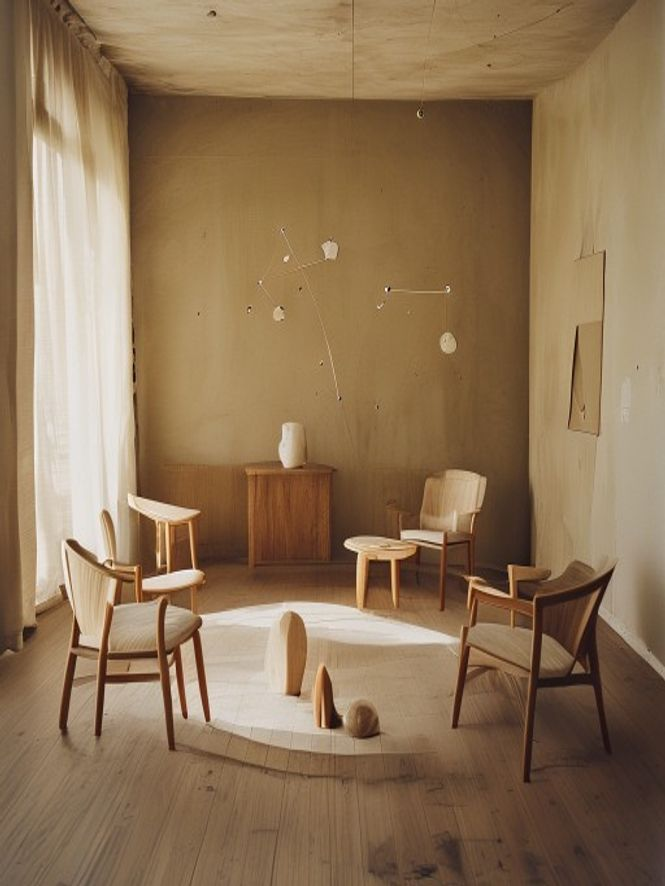
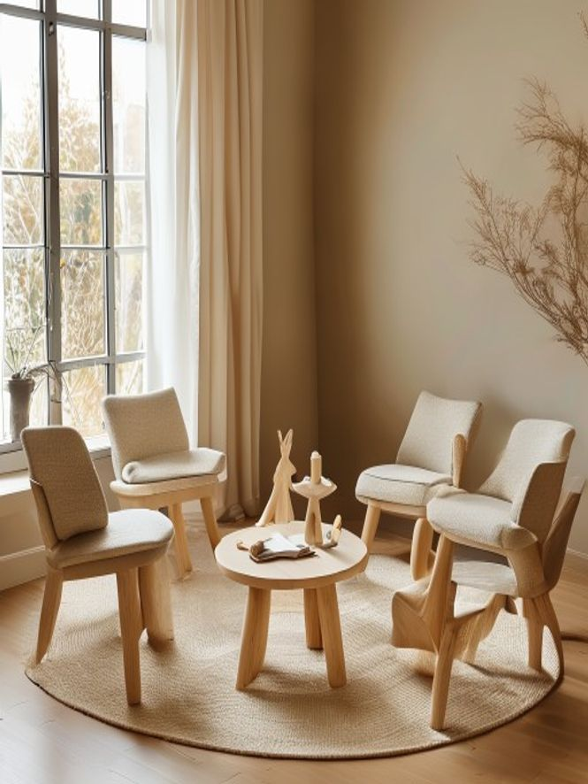
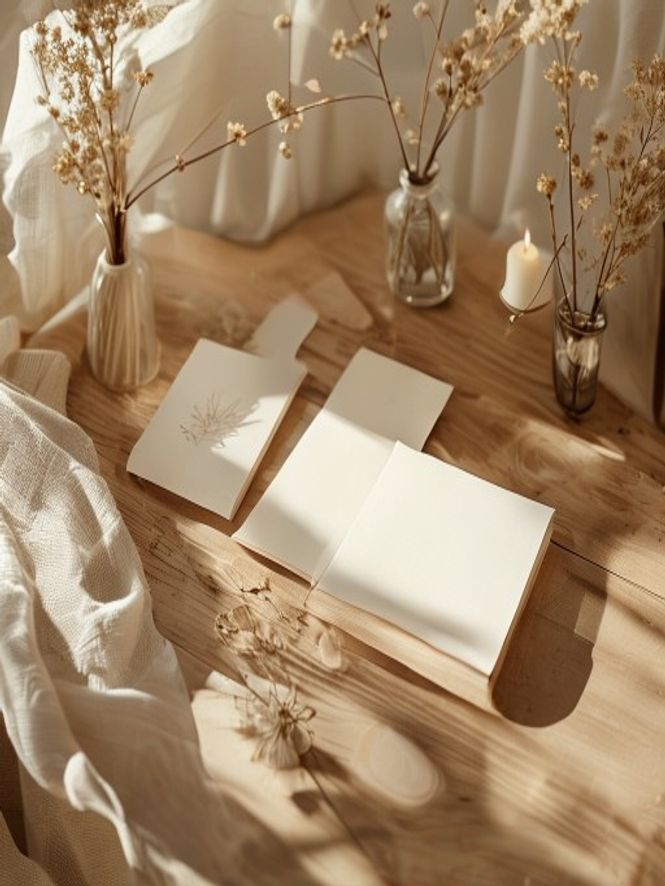
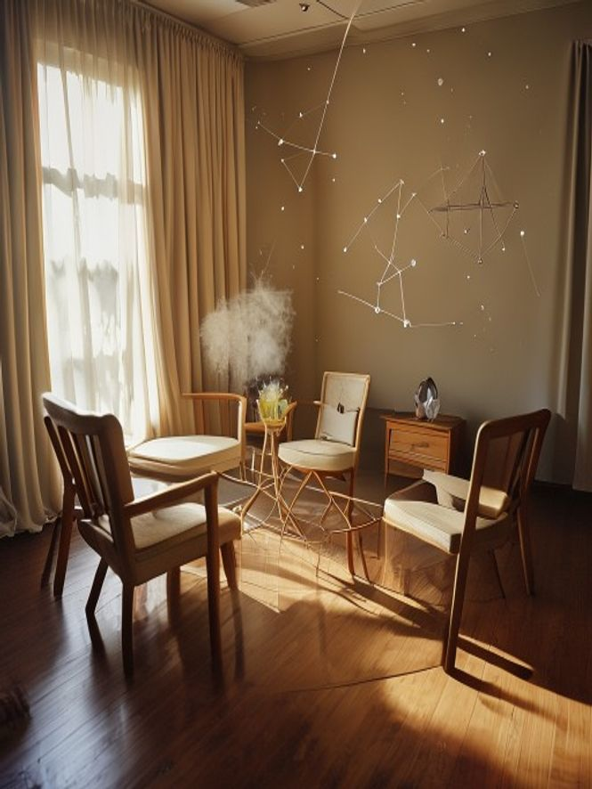
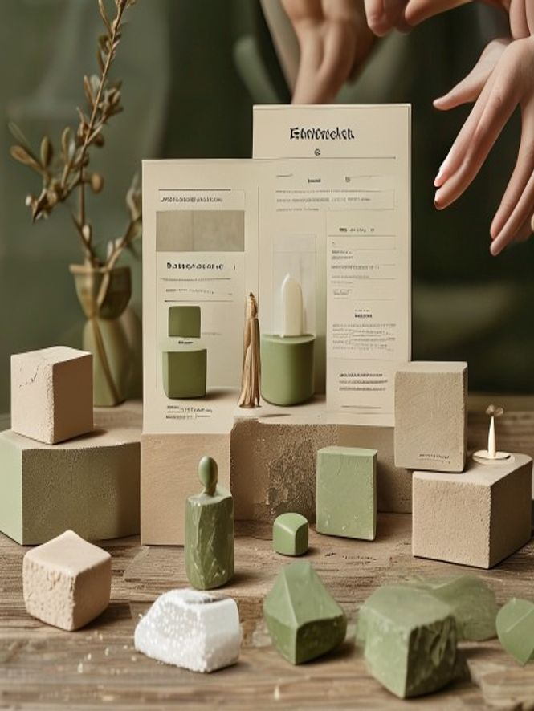
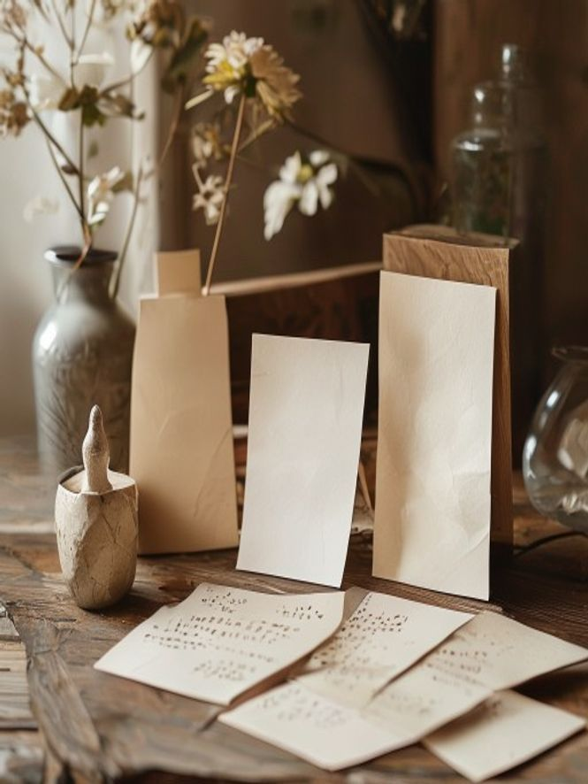

Moodboard first pass
Exploración descartable generada sin login para orientar gusto. No son assets finales. Ver first-pass-review.md para notas.
Accepted / worth looking at




Rejected / avoid patterns



